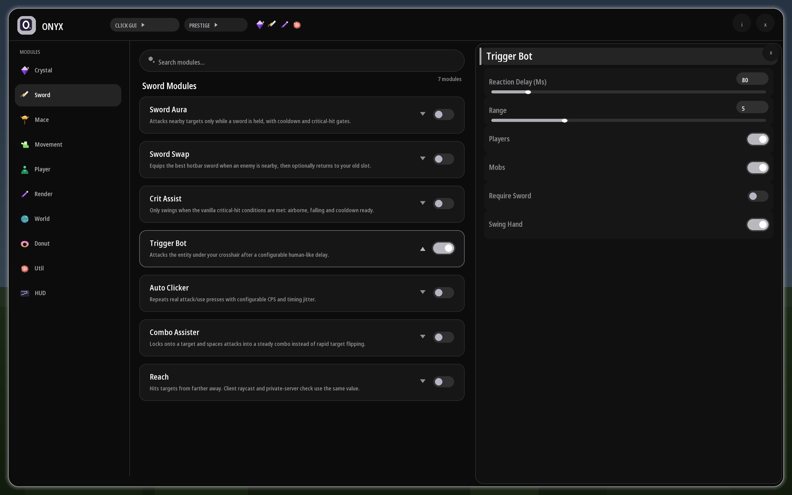
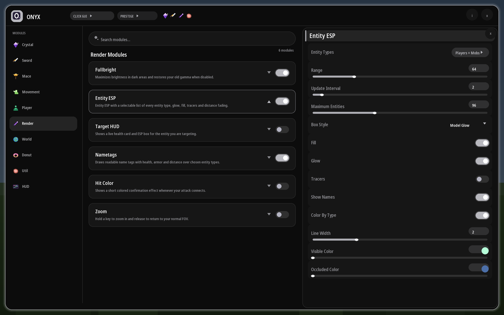
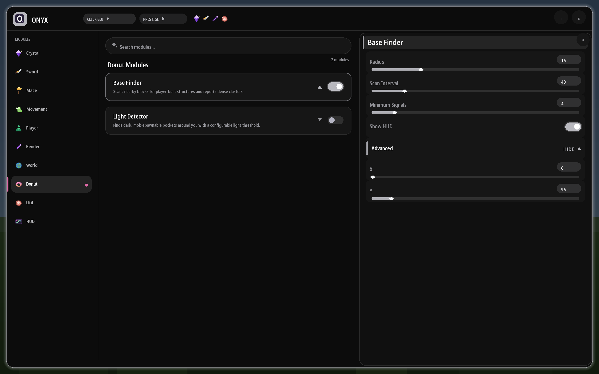

Combat, sorted
Crystal, Sword and Mace each get their own rail section. Mace AI now sets up real wind-charge smashes and Stun Slam sequences an axe shield-disable into a mace hit.
Onyx Client is a Minecraft Fabric menu rebuilt around spacing, readability and speed. Eighty-two modules, ten sorted categories, a theme engine and one shared GUI shell for ClickGUI and Dropdown layouts.

Combat is split by weapon family, automation is separated from visuals, and the Donut section keeps world-scanning tools out of the way.
Crystal, Sword and Mace each get their own rail section. Mace AI now sets up real wind-charge smashes and Stun Slam sequences an axe shield-disable into a mace hit.
Trigger Bot, Auto Clicker and Combo Assister reuse vanilla attack calls. Snap Tap replays your last movement window when you press its key.
Base Finder and Light Detector scan nearby structures and dark pockets with HUD readouts.
Cycle 37 palettes from the top bar, switch layouts instantly and tune scale or opacity.
Reaction Monitor warns you about high CPS, fast swaps and auto-Breach patterns.
Cached lists, spread-out rows, shared rendering and a single GUI implementation for both layouts.
Search all 82 modules or filter by category. Every entry matches the in-game name and description.
Combat, visuals and advanced HUD settings are rendered from the same shared three-column shell.


Drop the jar in your Fabric mods folder and press Right Shift. No external dependencies beyond Fabric for Minecraft 1.21.11.
Fabric 1.21.11 · 9.4 MB · client jar
SHA-256: 8FA77C7416588E458A79AFEEE994D3BF95D8C4A39CBF61D75E85E8CD6C1D38C7